|
|
This project explores the use of image frequency manipulation to modify images and produce compelling visual effects. Starting from applying filters to blur and sharpen features, we are then able to create hybrid and blended images by combining different frequencies and utilizing Gaussian and Laplacian stacks.
An edge detection algorithm was implemented by using the finite difference operators $Dx$ and $Dy$.
$$ D_x = \begin{bmatrix} 1 & -1 \end{bmatrix}$$ $$ D_y = \begin{bmatrix} 1 \\ -1 \end{bmatrix}$$$Dx$ calculates changes in intensity of adjacent pixels in the horizontal direction, while its transpose, $Dy$ calculates changes in the vertical direction. Thus, convolving the image with $Dx$ and $Dy$ produces the partial derivatives in $x$ and $y$ respectively. These partial derivatives can then be combined to compute the gradient magnitude $G_m$ which shows the strength in changes in intensity.
$$\frac{\partial Img}{\partial x} = Img * D_x $$ $$\frac{\partial Img}{\partial y} = Img * D_y $$ $$G_m = \sqrt{(\frac{\partial Img}{\partial x})^2 + (\frac{\partial Img}{\partial y})^2}$$This gradient magnitude image is then binarized to produce the edge image.
 Figure 1: Original image cameraman.png. |
 Figure 2: Partial $x$ derivative. |
 Figure 3: Partial $y$ derivative. |
 Figure 4: Binarized edge image with threshold $= 0.25$. |
While the finite difference operators are effective in detecting changes in pixel intensity, they can be sensitive to noise. To reduce noise, the function gaussian_blur was created to blur the image using a 2D Gaussian filter. By first blurring the image, and then applying the finite difference operators, smoother results were produced. For these images, the Gaussian kernel was created with radius $r=3$ and standard deviation $\sigma=1$.
 Figure 5: Partial $x$ derivative after Gaussian blur. |
 Figure 6: Partial $y$ derivative after Gaussian blur. |
|
Figure 7: Binarized edge image with threshold $= 0.1$. |
Compared to the initial result without filtering, the filtered edge image has smoother, clearer lines and fewer dots of noise.
Alternatively, because convolution is commutative, the same effect can also be achieved by using the derivative of the Gaussian (DoG) filter. To this end, the Gaussian kernel was convolved with $Dx$ and $Dy$ (Figure 8 and FIgure 9), and then the image was convolved with $Dx$ and $Dy$ to show the partial derivatives.
 Figure 8: $D_x$ after convolving with the Gaussian kernel. |
 Figure 9: $D_y$ after convolving with the Gaussian kernel. |
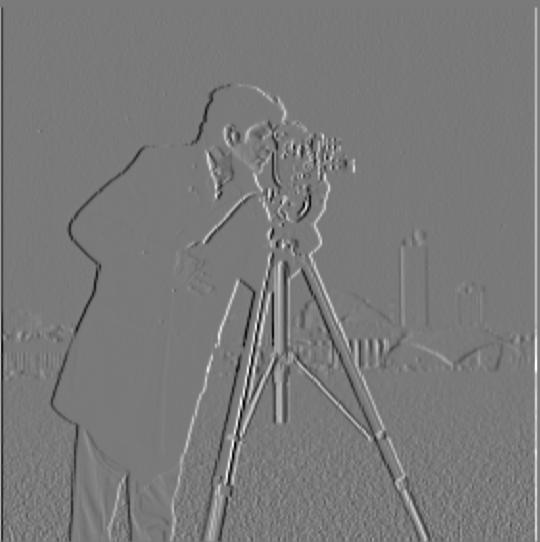
Figure 10: Partial $x$ derivative using the derivative of the Gaussian. |
Figure 11: Partial $y$ derivative using the derivative of the Gaussian. |
 Figure 12: Binarized edge image with threshold $= 0.097$. |
In order to sharpen an image $f$, an unsharp mask filter can be used. By convolving with a Gaussian filter, the image is blurred to retain the image's low frequencies. Thus, to extract the high frequencies, the blurred image is extracted from the original image. The high frequencies are then multiplied by the sharpening factor $\alpha$ and added back to the original image
$$f_{\text{sharp}} = f + \alpha (f - f * g) = (1 + \alpha) f - \alpha f * g = f * ((1 + \alpha)e - \alpha g)$$- $f =$ original image
- $f_{\text{sharp}} =$ sharpened image
- $g =$ Gaussian filter
- $\alpha =$ sharpening factor that controls the strength of the high-frequency details added back to the original image
- $e =$ unit impulse filter
 Figure 13: Original image taj.jpg. |
 Figure 14: Sharpened taj.jpg with $\alpha=2$. |
 Figure 15: Sharpened taj.jpg with $\alpha=5$. |
 Figure 16: Original image montmartre.jpg. |
Figure 17: Sharpened montmartre.jpg with $\alpha=2$. |
Figure 18: Sharpened montmartre.jpg with $\alpha=5$. |
Increasing $\alpha$ strengthens the high-frequency details in the sharpened image.
Re-sharpening a Blurred Image
In the following process, the original image of my cat Luna luna_small.jpg was first blurred and then "restored" by applying the unsharp mask filter.
 Figure 19: Original image luna_small.jpg. |
Figure 20: Blurred image luna_small_blurred.jpg. |
 Figure 21: Blurred then sharpened with $\alpha=2$. |
 Figure 22: Blurred then sharpened with $\alpha=5$. |
High-pass and low-pass filters can be used to create hybrid images by combining the low-frequency components of one image, lo_im, with the high-frequency components of another, hi_im. When overlaid, hi_im is prominent when viewed up close, while the lower frequencies from lo_im dominate from a distance, as low-frequency features are more easily perceived at a longer distance.
Derek & Nutmeg
 Figure 23: Original image DerekPicture.jpg $r = 30, \sigma=9$. |
 Figure 24: Original image nutmeg.jpg $r = 10, \sigma=3$. |
 Figure 25: Grayscale hybrid image of Derek & Nutmeg. |
 Figure 26: Colored hybrid image of Derek & Nutmeg. |
Real-life Elana & Elana as a drawing
 Figure 27: Elana at La Note $r = 10, \sigma=9$. |
 Figure 28: Elana's self-portrait drawn using Procreate $r = 10, \sigma=3$. |
 Figure 29: Grayscale hybrid image of Elana. |
 Figure 30: Colored hybrid image of Elana. |
Real-life motorcycle & drawing of a motorcycle
|
Figure 31: Real 2011 BMW R1200GS $r = 10, \sigma=9$. |
Figure 32: Drawing of the 2011 BMW R1200GS (graphite on paper) $r = 10, \sigma=3$. |
Figure 33: Grayscale hybrid image of the motorcycle. |
Figure 35: Colored hybrid image of the motorcycle. |
Prof. Efros & Prof. Ng
|
Figure 36: Computer vision professor Alexei Efros efros.jpg $r = 10, \sigma=9$. |
 Figure 37: Computer graphics professor Ren Ng yirenng.jpg $r = 10, \sigma=3$. |
Figure 38: Grayscale hybrid image of the two professors. |
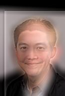
Figure 39: Colored hybrid image of the two professors. |
|
Figure 40: Frequency analysis of efros.jpg. |
Figure 41: Frequency analysis of yirenng.jpg. |
Figure 42: Frequency analysis of efros.jpg after low-pass filtering. |
 Figure 43: Frequency analysis of yirenng.jpg after high-pass filtering. |
|
Figure 44: Frequency analysis of the professors' hybrid image. |
Building off of the techniques to devise low-pass and high-pass filters, band-pass filters can be created to blend images smoothly. In order to blend one image, im1, with another, im2, Gaussian and Laplacian stacks are implemented. As opposed to a Gaussian pyramid, images in a Gaussian stack are not downsampled; instead, the Gaussian filter is successively applied at each level, preserving the image dimensions. Therefore, each successive level in the Gaussian stack stores increasingly low frequencies. The Gaussian stack is then used to build the Laplacian stack. Each level $i$ in the Laplacian stack $L$ is computed from images in the Gaussian stack $G$ as follows:
$$L_i = G_i - G_{i + 1}$$This computation effectively applies a band-pass filter to the image, allowing important details to be isolated in each band. Having built Gaussian and Laplacian stacks for im1 and im2, the stacks can then be utilized for multiresolutional blending.
Given the input images apple.jpeg and orange.jpeg, the images are first converted to grayscale (by taking only one of the color channels) and then filtered to build the Gaussian and Laplacian stacks.
 Figure 45: Original image apple.jpeg. |
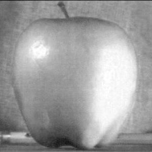
Figure 46: Grayscale apple.jpeg. |
||
|
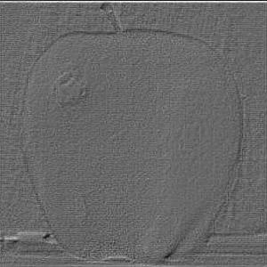
Figure 47: apple.jpeg at level 0 in the Laplacian stack. |
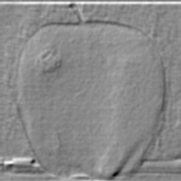
Figure 48: apple.jpeg at level 4 in the Laplacian stack. |
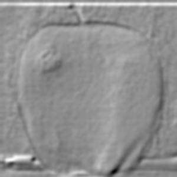
Figure 49: apple.jpeg at level 8 in the Laplacian stack. |
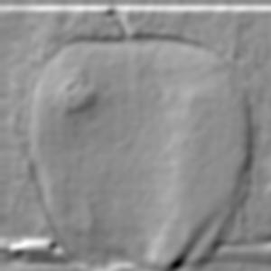
Figure 50: apple.jpeg at level 12 in the Laplacian stack. |
 Figure 51: Original image orange.jpeg. |
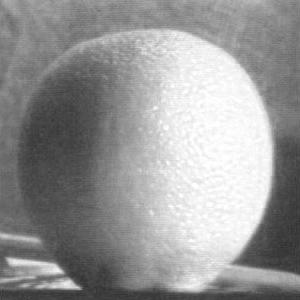
Figure 52: Grayscale orange.jpeg. |
||
|
Figure 53: orange.jpeg at level 0 in the Laplacian stack. |
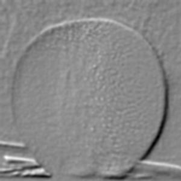
Figure 54: orange.jpeg at level 4 in the Laplacian stack. |
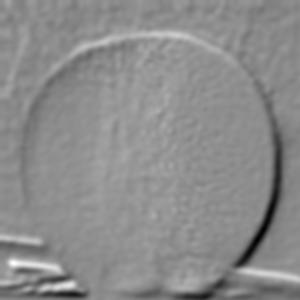
Figure 55: orange.jpeg at level 8 in the Laplacian stack. |
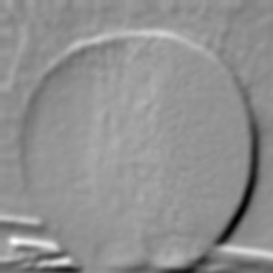
Figure 56: orange.jpeg at level 12 in the Laplacian stack. |
To blend two images seamlessly, the multiresolution spline technique is used. By gently distorting im1 and im2, the images can then be joined together in a smooth seam called an image spline. At each band of image frequencies, multiresolutional blending computes this seam between the two images separately, allowing for the gradual blending of features.
First, a mask is created to control how the two images are combined, defining which areas of each image would be visible in the result. To blend apple.jpeg and orange.jpeg, a mask is used to divide the image in half vertically (Figure 59).
Finally, the blended oraple is achieved:
|
Figure 57: Original image apple.jpeg. |
Figure 58: Original image orange.jpeg. |
 Figure 59: Vertical mask. $r = 20, \sigma=10$ |
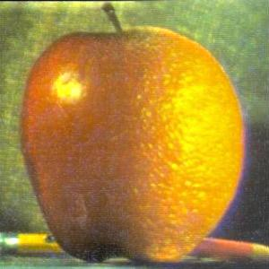
Figure 60: Oraple. $r = 3, \sigma=1$ |
None pizza with left beef
|
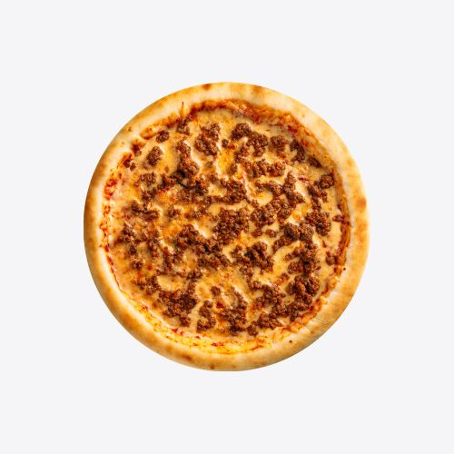
Figure 61: Original image pizza.jpg. |
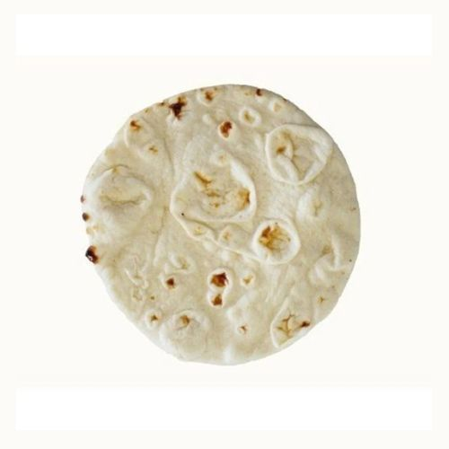
Figure 62: Original image none.jpg. |
Figure 63: Vertical mask. $r = 20, \sigma=10$ |
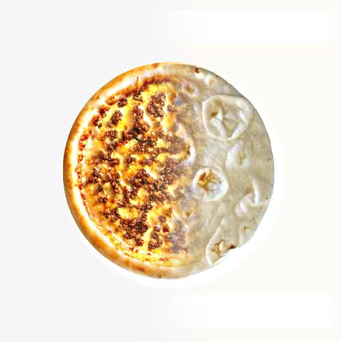
Figure 64: None pizza with left beef. $r = 3, \sigma=1$ |
Jianguo of the cliffs
|
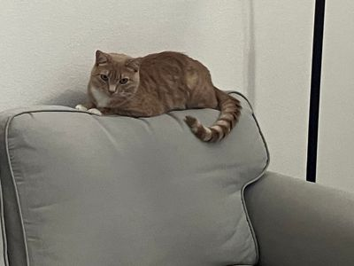
Figure 65: Original image jianguo_couch.jpg. |
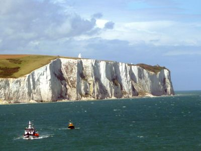
Figure 66: Original image cliff.jpg. |
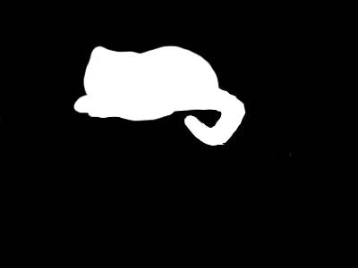
Figure 67: Irregular mask for Jianguo made using Photoshop. $r = 3, \sigma=1$ |
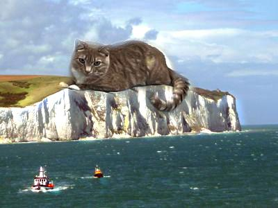
Figure 68: Jianguo of the cliffs. $r = 3, \sigma=1$ |
Lunazilla
|
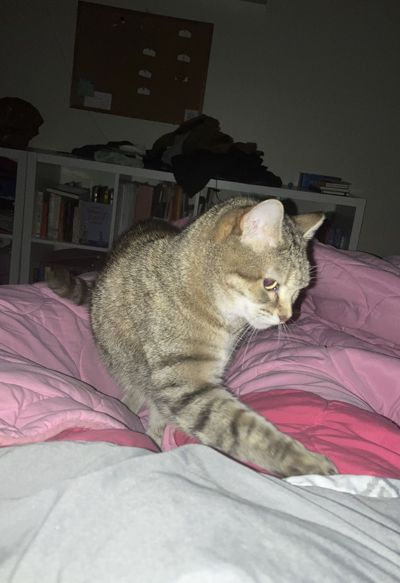
Figure 69: Original image luna_night.jpg. |
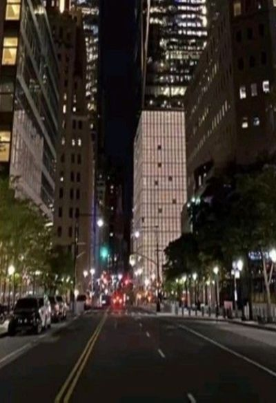
Figure 70: Original image city.jpg. |
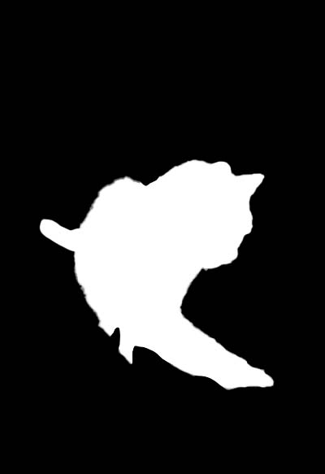
Figure 71: Irregular mask for Luna made using Photoshop. $r = 3, \sigma=1$ |
Figure 72: Lunazilla. $r = 3, \sigma=1$ |